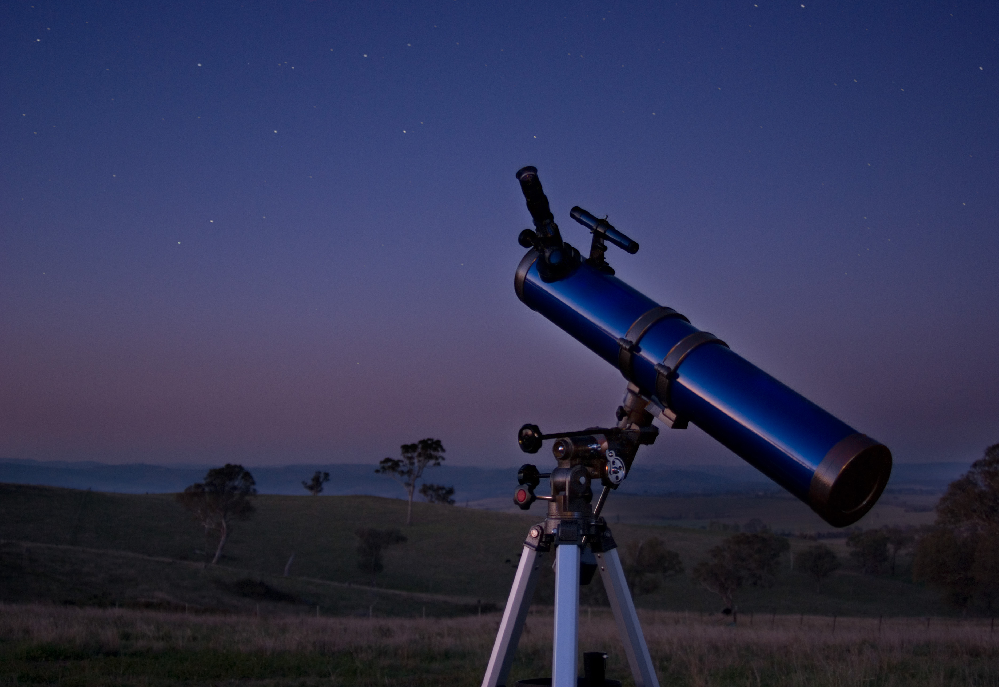
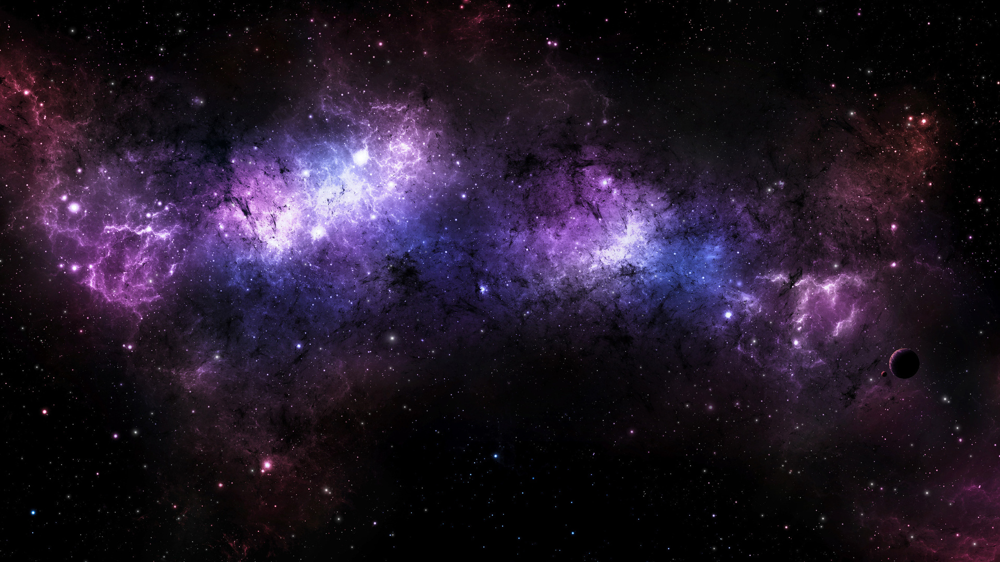

This website is for beginners interested in space! Space is for everyone - you don't need to be a rocket
scientist to enjoy it. With the future of the human species increasingly depending on exploration of
the cosmos, there is no better time to get interested in this fascinating subject. Space defines our past, present, and future. Here's how.
The past: From the Big Bang to the Space Race, the Apollo Missions to the moon landing, and finally missions to other planets, human beings
slowly unraveled the language of the universe.
The present: Human beings continued to explore their understanding of the cosmos, working on theories proposed by previous generations, launching more telescopes and satellites, privatising the space industry,
sending new technologies to mars, and exploring the potential of other planets, moons and exoplanets for water and life.
The future: Who knows what the future may have in store? Colonising outer space to find a habitable destination is on top of the list. Meanwhile, space
tourism and international collaboration will really take off, and maybe one day we all will have the chance to travel to outer space!
 